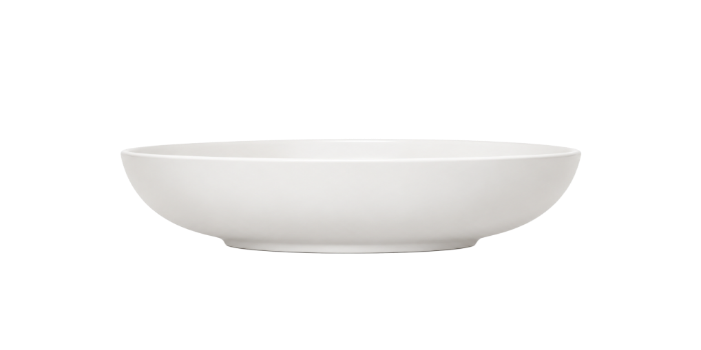

FOODS
CREATE
NEW FORM
음식, 새로운 조형의 언어가 됩니다
음식을 선택해주세요
A에 섞고 싶은 음식을 입력하세요
선택된 이미지를 분석중입니다
이미지 분석에는 시간이 소요됩니다
재료를 골라 그릇에 담아주세요
1 기본
2 재해석
새로운 조형 요리하기
음식을 드래그하여 그릇안으로 넣어주세요

맛보기 조형을 선택하세요
맛보고 싶은 조형을 클릭하세요
마우스 왼쪽을 누르며 3D 조형을 돌려보세요
보이지 않는 면은 AI가 추정한 형태예요
이 조형, 어땠어요?